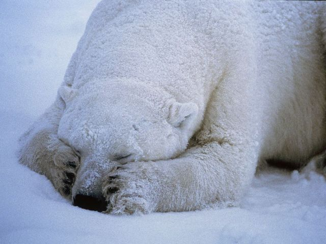

Белый медведь - это самое крупное млекопитающее. Он является типичным обитателем Арктики, лишь кое-где заходящим в материковые тундры. Несмотря на свои размеры и кажущуюся неповоротливость, белые медведи даже на суше быстры и ловки, а в воде легко и далеко плавают, свободно ныряют. Вот несколько интересных фактов о белых медведях.
1. Белый медведь — самый большой теплокровный хищник на планете. Вес белого медведя может достигать 1 000 кг, а длина 3 метров.
2. Наиболее характерной особенностью белого медведя является абсолютно белый мех, однако он является не совсем тем, чем кажется. На самом деле, их волосяные фолликулы являются прозрачными полыми трубками. Благодаря этому их шерсть отражает окружающий их свет.
3. Если сфотографировать белого медведя на инфракрасную камеру, то на снимке будет видно только кончик носа и исходящий из него пар, а самого мишки видно не будет.
4. Белые медведи превосходные пловцы. Чтобы хорошо плавать у медведей даже есть плавательные перепонки между пальцами. В воде они развивают скорость до 6,5 км/ч.